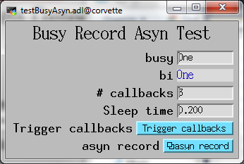

Fixes to build with EPICS v7
Cleaned up Documentation
Fix to asyn device support. There were 2 problems:
A test application to demonstrate these problems was added to the busy module. It allows testing all combinations of the following 6 settings:
The callback value is the logical inverse of the current record value. This means that if 1 is written to the record the callback value will be 0, and the record value will immediately change to 0. For the triggered callbacks the values will toggle between 0 and 1. The following is a screen shot of the test application:

The test application requires autosave, so busy is now optionally dependent on autosave.
This release changes the interrupt callback logic. Previously it was directly calling monitor() and recGblFwdLink and not actually processing the record. It was hard to get the logic right, and the 2 previous versions of this support had bugs discussed above. The proper solution is to process the record on each callback.
This version is based directly on the code for the bo record in devAsynInt32.c in asyn R4-33. The bo record was just changed to the busy record, and the logic is the same as that for bo records with the asyn:READBACK info tag. It processes the record on each callback from the driver, and distinguishes between record processing due to driver callbacks (in which case the driver must not be called) and normal record processing (in which case the driver must be called).
This fix also makes the record have correct timestamps when callbacks occur, which was not the case with the previous versions.
Mark Rivers is responsible for these changes.
Build failed on Windows because comment character not at beginning of line.
Fixed a bug when the using asynchronous device support, for example devBusyAsyn with an asyn port driver with ASYN_CANBLOCK. The problem occurred when 0 was written to the record, followed immediately by writing 1. If the record was still processing with the 0 value when the 1 was written, device support would not process a second time with the 1 value. It should have processed a second time with the 1 value (via the EPICS .RPRO field), but this was not happening.
configure/CONFIG no longer defines STATIC_BUILD=YES on any platform.
Added caQtDM display.
Added autosave-request file busyRecord_settings.req.
RELEASE* changes
Added .opi display file for CSS-BOY
Added busyRecord.db database, xxBusyRecord.adl medm-display file.
busyRecord.c rewritten to minimize differences from 3.14.11 bo record.
Ben Franksen's "Raw Soft Channel" device support allows the busy record to write a user configurable integer value (the value of the MASK field) via its OUT link, when the record's VAL field has the value 1. Currently, MASK can only be specified at DCT time. For example, you can configure MASK to a bit-pattern and have the BUSY record write this value to a selRecord's SELN field.
The busy record was reimplemented to permit device support to reset the VAL field to zero.
This version is intended to build with EPICS base 3.14.10.
This is the first release of the synApps busy module.
This version is intended to build with EPICS base 3.14.10.
Suggestions and Comments to: